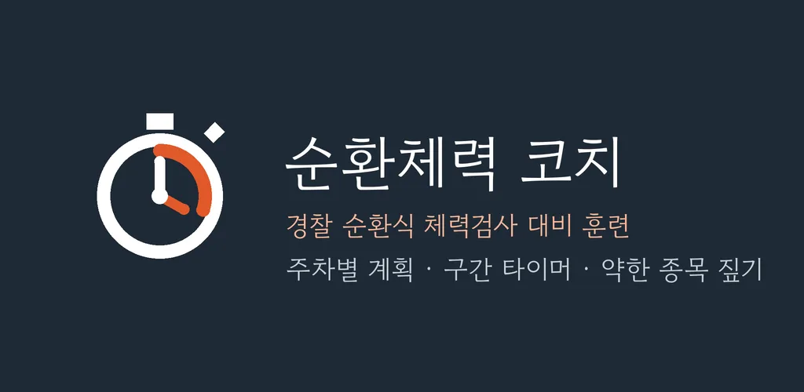
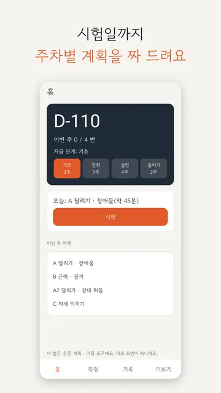
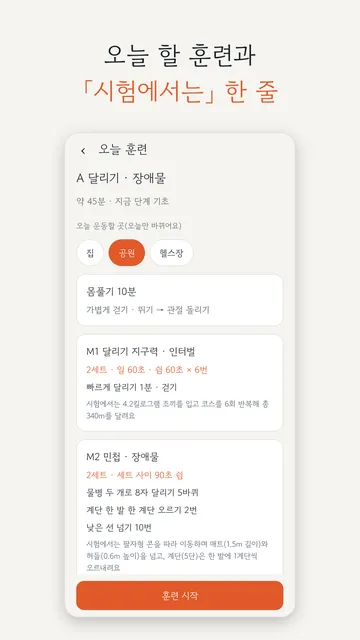
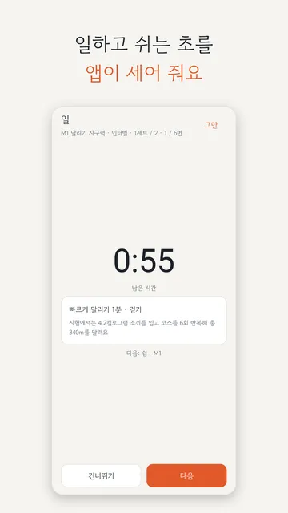

주식회사 텔로스가 만든 앱
순환체력 코치 앱경찰 순환식 체력검사 대비 훈련
경찰 순환식 체력검사를 혼자 준비하는 분을 위한 훈련 앱이에요. 시험일과 지금 수준을 고르면 시험일까지 주차별 훈련 계획을 짜 드려요. 가입 없이 바로 시작해요.
구글 플레이에서 받기 (무료)안드로이드 8.0 이상에서 쓸 수 있어요.

시험일까지 주차별 계획
- 체력검사 예정일, 지금 수준(초보, 중간, 재수생), 주로 운동하는 곳(집, 공원, 헬스장), 주에 며칠 운동할지를 고르면 계획을 짜요.
- 예정일을 모르면 12주 계획으로 짜요.
- 홈에서 시험까지 남은 날과 이번 주 차례를 봐요.
- 운동하는 곳은 하루마다 바꿀 수 있어요.
오늘 훈련과 세트 타이머
- 동작 카드마다 세트와 쉬는 시간이 있고, 「시험에서는」 한 줄로 실제 시험 동작을 알려 드려요.
- 일하고 쉬는 초를 앱이 세어 주고, 구간이 끝나면 짧은 소리와 진동으로 알려요.
- 훈련이 끝나면 힘듦 정도와 아픈 곳을 남겨요.



모의 순환 구간 타이머
- 장애물코스 달리기, 장대 허들 넘기, 당기기와 밀기, 구조하기, 방아쇠당기기. 시작과 다섯 구간 끝마다 큰 단추를 눌러 재요.
- 학원이나 체험장의 실제 기구로 잰 기록과, 집이나 공원, 헬스장에서 한 대체 순환 기록을 나눠 저장해요.
- 재다가 앱을 닫아도 마지막으로 누른 뒤 1시간 안에 다시 열면 이어서 보여요. 휴대폰을 껐다 켜면 처음부터 다시 재요.
내 기록으로 약한 종목 짚기
- 두 번째 기록부터 내 기록끼리 비교해 약한 구간을 짚어 드려요.
- 강화와 실전 단계에서는 약한 종목 연습을 다음 주 계획에 1세트 더 넣어요.
- 실제 기구로 잰 기록만 4분 40초 선, 5분 10초 선과 함께 그래프로 봐요. 대체 순환 기록은 합격선과 바로 비교하지 않아요.
공식 기준과 근거
- 평가 기준 표와 종목별 원문 설명을 앱에서 봐요. 출처와 확인한 날짜를 함께 적었어요.
- 원문 열기를 누르면 휴대폰 브라우저로 원문을 열어요.
- 계획에 쓴 근거 12건(공식 안내, 운동 연구, 공공 자료)을 근거 화면에 모았어요.
안전
- 처음에 몸 상태를 먼저 확인해요. 하나라도 「예」이면 가볍게 시작하도록 짜요.
- 훈련 기록을 남길 때 두 번 연속 같은 곳이 아프다고 하면 그 부위를 쓰는 동작을 다음 훈련에서 「가볍게」로 표시하고, 쉬라고 알려 드려요.
- 시험장에서 쓸 수 없는 스파이크, 장갑, 미끄럼방지 가루, 스프레이를 알려 드려요.
- 원하면 하루 한 번 정한 시각에 훈련 알림을 받아요.
무료, 광고 없음
- 무료이고, 광고와 결제가 없어요.
- 회원 가입이나 로그인이 없어요.
- 기록은 휴대폰 안에만 남아요. 앱에 인터넷 권한이 없어서 회사로 보내지 않아요.
- 설정에서 기록을 모두 지울 수 있어요.
- 자세한 내용은 순환체력 코치 개인정보 처리방침에 있어요.
알려 드려요
- 경찰청과 관계없는 개인 훈련 도구예요. 합격을 약속하지 않아요.
- 기준은 서울경찰청 2026년 제2차 체력검사 안내 붙임 1(「경찰공무원임용령 시행규칙」 별표 5의3)을 바탕으로 했어요. 응시하시는 청의 최신 공고를 꼭 다시 확인하세요.
- 운동 계획과 기록 도구이며, 의료 조언이 아니에요.
함께 보세요
궁금한 점은 contact@telos.it.kr 로 보내 주세요.